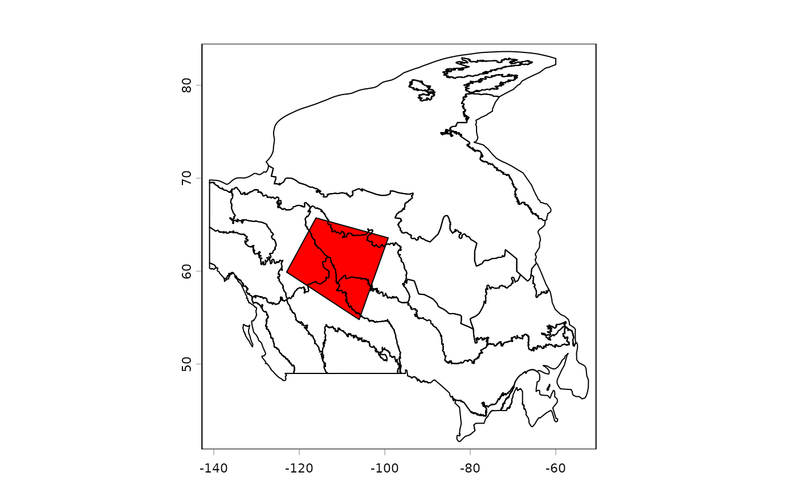

![[Stable]](figures/lifecycle-stable.svg)
This function can be used to prepare R objects from remote or local data sources.
The object of this function is to provide a reproducible version of
a series of commonly used steps for getting, loading, and processing data.
This function has two stages: Getting data (download, extracting from archives,
loading into R) and post-processing (for Spatial* and Raster*
objects, this is crop, reproject, mask/intersect).
To trigger the first stage, provide url or archive.
To trigger the second stage, provide studyArea or rasterToMatch.
See examples.
prepInputs(
targetFile = NULL,
url = NULL,
archive = NULL,
alsoExtract = NULL,
destinationPath = getOption("reproducible.destinationPath", "."),
fun = NULL,
quick = getOption("reproducible.quick"),
overwrite = getOption("reproducible.overwrite", FALSE),
purge = FALSE,
useCache = getOption("reproducible.useCache", 2),
.tempPath,
verbose = getOption("reproducible.verbose", 1),
...
)Arguments
- targetFile
Character string giving the filename (without relative or absolute path) to the eventual file (raster, shapefile, csv, etc.) after downloading and extracting from a zip or tar archive. This is the file before it is passed to
postProcess. The internal checksumming does not checksum the file after it ispostProcessed (e.g., cropped/reprojected/masked). UsingCachearoundprepInputswill do a sufficient job in these cases. See table inpreProcess().- url
Optional character string indicating the URL to download from. If not specified, then no download will be attempted. If not entry exists in the
CHECKSUMS.txt(indestinationPath), an entry will be created or appended to. ThisCHECKSUMS.txtentry will be used in subsequent calls toprepInputsorpreProcess, comparing the file on hand with the ad hocCHECKSUMS.txt. See table inpreProcess().- archive
Optional character string giving the path of an archive containing
targetFile, or a vector giving a set of nested archives (e.g.,c("xxx.tar", "inner.zip", "inner.rar")). If there is/are (an) inner archive(s), but they are unknown, the function will try all until it finds thetargetFile. See table inpreProcess(). If it isNA, then it will not attempt to see it as an archive, even if it has archive-like file extension (e.g.,.zip). This may be useful when an R function is expecting an archive directly.- alsoExtract
Which files to fetch or extract in addition to
targetFile. Spatial data rarely arrives as one file – a shapefile is five or six, and a raster often has a.aux.xml,.ovror.tfwalongside carrying its attribute table, overviews or georeferencing – so this controls how much of that company comes along.The default depends on where the files are coming from, because "everything" only means something when a container bounds it:
alsoExtractfrom an archivefrom a urlNULL(default)every file in the archive as for "similar""similar"files sharing targetFile's name without its extensionsame, discovered by listing the remote directory NAor"none"targetFileonlytargetFileonlya character vector those files only those files only An archive bounds what "all files" can mean, so
NULLextracts all of it. Aurlhas no such bound – the server may hold thousands of unrelated files – soNULLthere meanstargetFileand its companions, never the whole remote directory.Each element of a character vector may also be a regular expression: if an element does not match any archive member literally (by relative path or basename), it is passed to
grep()against the archive's file list and all matching members are extracted. For example,alsoExtract = "CMD_sm|CMD_sp"extracts every file whose name containsCMD_smorCMD_sp. See table inpreProcess().- destinationPath
Character string of a directory in which to download and save the file that comes from
urland is also where the function will look forarchiveortargetFile. To prevent repeated downloads in different locations, the user can also setoptions("reproducible.destinationPathShared")to one or more local file paths to search for the file before attempting to download. Default for that option isNULLmeaning do not search locally. The previous nameoptions("reproducible.inputPaths")is still accepted as a backwards-compatible alias.- fun
Optional. If specified, this will attempt to load whatever file was downloaded during
preProcessviadlFun. This can be either a function (e.g., sf::st_read), character string (e.g., "base::load"), NA (for no loading, useful ifdlFunalready loaded the file) or if extra arguments are required in the function call, it must be a call namingtargetFile(e.g.,sf::st_read(targetFile, quiet = TRUE)) as the file path to the file to load. See details and examples below.- quick
Logical. This is passed internally to
Checksums()(the quickCheck argument), and toCache()(the quick argument). This results in faster, though less robust checking of inputs. See the respective functions.- overwrite
Logical. Passed to
writeTo(possibly insidepostProcess) andpostProcess.- purge
Logical or Integer.
0/FALSE(default) keeps existingCHECKSUMS.txtfile andprepInputswill write or append to it.1/TRUEwill deleted the entireCHECKSUMS.txtfile. Other options, see details.- useCache
Passed to
Cachein various places. Defaults togetOption("reproducible.useCache", 2L)inprepInputs, andgetOption("reproducible.useCache", FALSE)if calling any of the inner functions manually. ForprepInputs, this mean it will useCacheonly up to 2 nested levels, which includespreProcess.postProcessand its nested*Inputfunctions (e.g.,cropInputs,projectInputs,maskInputs) are no longer internally cached, asterraprocessing speeds mean internal caching is more time consuming. We recommend caching the fullprepInputscall instead (e.g.prepInputs(...) |> Cache()).- .tempPath
Optional temporary path for internal file intermediate steps. Will be cleared
on.exitfrom this function.- verbose
Numeric, -1 silent (where possible), 0 being very quiet, 1 showing more messaging, 2 being more messaging, etc. Default is 1. Above 3 will output much more information about the internals of Caching, which may help diagnose Caching challenges. Can set globally with an option, e.g.,
options('reproducible.verbose' = 0) to reduce to minimal- ...
Additional arguments passed to
postProcess()andCache(). Since...is passed topostProcess(), these will...will also be passed into the inner functions, e.g.,cropInputs(). Possibly useful other arguments includedlFunwhich is passed topreProcess. See details and examples.
Value
This is an omnibus function that will return an R object that will have resulted from
the running of preProcess() and postProcess() or postProcessTo(). Thus,
if it is a GIS object, it may have been cropped, reprojected, "fixed", masked, and
written to disk.
Stage 1 - Getting data
See preProcess() for combinations of arguments.
Download from the web via either
googledrive::drive_download(),utils::download.file();Load into R using
terra::rast,sf::st_read, or any other function passed in withfun;Checksumming of all files during this process. This is put into a
CHECKSUMS.txtfile in thedestinationPath, appending if it is already there, overwriting the entries for same files if entries already exist.
Stage 2 - Post processing
This will be triggered if either rasterToMatch or studyArea
is supplied.
Fix errors. Currently only errors fixed are for
SpatialPolygonsusingbuffer(..., width = 0);Crop using
cropTo();Project using
projectTo();Mask using
maskTo();write the file to disk via
writeTo().
NOTE: checksumming does not occur during the post-processing stage, as
there are no file downloads. To achieve fast results, wrap
prepInputs with Cache.
postProcessing of Spat*, sf, Raster* and Spatial* objects:
The following has been DEPRECATED because there are a sufficient number of
ambiguities that this has been changed in favour of from and the *to family.
See postProcessTo().
DEPRECATED: If rasterToMatch or studyArea are used, then this will
trigger several subsequent functions, specifically the sequence,
Crop, reproject, mask, which appears to be a common sequence while
preparing spatial data from diverse sources.
See postProcess() documentation section on
Backwards compatibility with rasterToMatch and/or studyArea arguments
to understand various combinations of rasterToMatch and/or studyArea.
fun
fun offers the ability to pass any custom function with which to load
the file obtained by preProcess into the session. There are two cases that are
dealt with: when the preProcess downloads a file (including via dlFun),
fun must deal with a file; and, when preProcess creates an R object
(e.g., raster::getData returns an object), fun must deal with an object.
fun can be supplied in three ways: a function, a character string
(i.e., a function name as a string), or an expression.
If a character string or function, is should have the package name e.g.,
"terra::rast" or as an actual function, e.g., base::readRDS.
In these cases, it will evaluate this function call while passing targetFile
as the first argument. These will only work in the simplest of cases.
When more precision is required, the full call can be written and where the
filename can be referred to as targetFile if the function
is loading a file. If preProcess returns an object, fun should be set to
fun = NA.
If there is a custom function call, is not in a package, prepInputs may not find it. In such
cases, simply pass the function as a named argument (with same name as function) to prepInputs.
See examples.
NOTE: passing fun = NA will skip loading object into R. Note this will essentially
replicate the functionality of simply calling preProcess directly.
purge
In options for control of purging the CHECKSUMS.txt file are:
0keep file
1delete file in
destinationPath, all records of downloads need to be rebuilt2delete entry with same
targetFile4delete entry with same
alsoExtract3delete entry with same
archive5delete entry with same
targetFile&alsoExtract6delete entry with same
targetFile,alsoExtract&archive7delete entry that same
targetFile,alsoExtract&archive&url
will only remove entries in the CHECKSUMS.txt that are associated with
targetFile, alsoExtract or archive When prepInputs is called,
it will write or append to a (if already exists) CHECKSUMS.txt file.
If the CHECKSUMS.txt is not correct, use this argument to remove it.
See also
Examples
if (requireNamespace("terra", quietly = TRUE) &&
requireNamespace("withr", quietly = TRUE)) {
library(reproducible)
withr::local_dir(withr::local_tempdir())
# Make a dummy study area map -- user would supply this normally
coords <- structure(c(-122.9, -116.1, -99.2, -106, -122.9, 59.9, 65.7, 63.6, 54.8, 59.9),
dim = c(5L, 2L)
)
studyArea <- terra::vect(coords, "polygons")
terra::crs(studyArea) <- "+proj=longlat +datum=WGS84 +no_defs +ellps=WGS84 +towgs84=0,0,0"
# Make dummy "large" map that must be cropped to the study area
outerSA <- terra::buffer(studyArea, 50000)
terra::crs(outerSA) <- "+proj=longlat +datum=WGS84 +no_defs +ellps=WGS84 +towgs84=0,0,0"
tf <- normPath(file.path(tempdir2(), "prepInputs2.shp"))
terra::writeVector(outerSA, tf)
# run prepInputs -- load file, postProcess it to the studyArea
studyArea2 <- prepInputs(
targetFile = tf, to = studyArea,
fun = "terra::vect",
destinationPath = tempdir2()
) |>
suppressWarnings() # not relevant warning here
# clean up
unlink("CHECKSUMS.txt")
##########################################
# Remote file using `url`
##########################################
if (identical(Sys.getenv("NOT_CRAN"), "true")) {
data.table::setDTthreads(2)
# download a zip file from internet, unzip all files, load as shapefile
# Don't know all the files -- prepInputs will guess: if the downloaded file is an
# archive, extract all files, then if there is a .shp, load it with sf::st_read
dPath <- file.path(tempdir2(), "ecozones")
shpUrl <- paste0(
"https://github.com/PredictiveEcology/reproducible/releases/download/v3.1.1/",
"ecozone_shp.zip"
)
# Wrapped in a try because this needs internet
shpEcozone <- try(prepInputs(destinationPath = dPath, url = shpUrl))
##########################################
# Local archive -- the same file, shipped with the package
##########################################
# The remaining examples use the copy in `inst/ex`, so they need no internet
dPath <- file.path(tempdir2(), "ecozonesLocal")
checkPath(dPath, create = TRUE)
file.copy(system.file("ex/ecozone_shp.zip", package = "reproducible"), dPath)
shpEcozone <- prepInputs(destinationPath = dPath, archive = "ecozone_shp.zip")
# Robust to partial file deletions: the missing files are re-extracted
unlink(dir(file.path(dPath, "Ecozones"), full.names = TRUE)[1:2])
shpEcozone <- prepInputs(destinationPath = dPath, archive = "ecozone_shp.zip")
# Once this is done, can be more precise in operational code:
# specify targetFile, alsoExtract, and fun, wrap with Cache
ecozoneFilename <- file.path(dPath, "Ecozones", "ecozones.shp")
# Note, you don't need to "alsoExtract" the archive... if the archive is not there, but the
# targetFile is there, it will not re-extract the archive.
ecozoneFiles <- c("ecozones.dbf", "ecozones.prj", "ecozones.shp", "ecozones.shx")
shpEcozone <- prepInputs(
targetFile = ecozoneFilename,
archive = "ecozone_shp.zip",
fun = "terra::vect",
alsoExtract = ecozoneFiles,
destinationPath = dPath
)
# Add a study area to Crop and Mask to
# Create a "study area"
coords <- structure(c(-122.98, -116.1, -99.2, -106, -122.98, 59.9, 65.73, 63.58, 54.79, 59.9),
dim = c(5L, 2L)
)
studyArea <- terra::vect(coords, "polygons")
terra::crs(studyArea) <- "+proj=longlat +datum=WGS84 +no_defs +ellps=WGS84 +towgs84=0,0,0"
shpEcozoneSm <- Cache(prepInputs,
archive = "ecozone_shp.zip",
targetFile = reproducible::asPath(ecozoneFilename),
alsoExtract = reproducible::asPath(ecozoneFiles),
studyArea = studyArea,
fun = "terra::vect",
destinationPath = dPath,
writeTo = "EcozoneFile.shp"
) # passed to determineFilename
terra::plot(shpEcozone[, 1])
terra::plot(shpEcozoneSm[, 1], add = TRUE, col = "red")
}
withr::deferred_run()
}
#> Running prepInputs
#> Running `preProcess`
#> Preparing: /tmp/Rtmpw26gH1/reproducible/6vrQa9DT/prepInputs2.shp
#> Running `process` (i.e., loading file into R)
#> targetFile located at:
#> /tmp/Rtmpw26gH1/reproducible/6vrQa9DT/prepInputs2.shp
#> Loading object into R
#> Running `postProcessTo`
#> projecting...
#> done! took: 0.0035 secs
#> masking...
#> done! took: 0.00128 secs
#> cropping...
#> done! took: 0.01 secs
#> postProcessTo done! took: 0.0271 secs
#> Running prepInputs
#> Running `preProcess`
#> ...downloading...
#> Downloading
#> https://github.com/PredictiveEcology/reproducible/releases/download/v3.1.1/ecozone_shp.zip
#> ...
#> alsoExtract is unspecified; assuming that all files must be extracted
#> No targetFile supplied. Checksumming all files in archive
#> From:
#> /tmp/Rtmpw26gH1/reproducible/35uTarIZ/ecozones/ecozone_shp.zip
#> Extracting
#> files
#> <char>
#> 1: Ecozones/ecozones.shx
#> 2: Ecozones/ecozones.prj
#> 3: Ecozones/ecozones.cpg
#> 4: Ecozones/ecozones.dbf
#> 5: Ecozones/ecozones.shp
#> ... Done extracting 7 files
#> Appending checksums to CHECKSUMS.txt. If you see this message repeatedly, you
#> can specify targetFile (and optionally alsoExtract) so it knows what to
#> look for.
#> Using sf::st_read on shapefile because sf package is available; to force old
#> behaviour with 'raster::shapefile' use fun = 'raster::shapefile' or
#> options('reproducible.shapefileRead' = 'raster::shapefile')
#> targetFile was not specified. Trying sf::st_read on
#> /tmp/Rtmpw26gH1/reproducible/35uTarIZ/ecozones/Ecozones/ecozones.shp. If
#> that is not correct, please specify a different targetFile and/or fun.
#> Running `process` (i.e., loading file into R)
#> targetFile located at:
#> /tmp/Rtmpw26gH1/reproducible/35uTarIZ/ecozones/Ecozones/ecozones.shp
#> Loading object into R
#> Reading layer `ecozones' from data source
#> `/tmp/Rtmpw26gH1/reproducible/35uTarIZ/ecozones/Ecozones/ecozones.shp'
#> using driver `ESRI Shapefile'
#> Simple feature collection with 25 features and 7 fields
#> Geometry type: POLYGON
#> Dimension: XY
#> Bounding box: xmin: -140.9994 ymin: 41.67354 xmax: -52.38455 ymax: 83.63315
#> Geodetic CRS: GCS_North_American_1983_CSRS98
#> Saved! Cache file: dba9e066cb3b1e62.rds; fn: sf::st_read
#> Running prepInputs
#> Running `preProcess`
#> From:
#> /tmp/Rtmpw26gH1/reproducible/YGsaTZNv/ecozonesLocal/ecozone_shp.zip
#> Extracting
#> files
#> <char>
#> 1: Ecozones/ecozones.shx
#> 2: Ecozones/ecozones.prj
#> 3: Ecozones/ecozones.cpg
#> 4: Ecozones/ecozones.dbf
#> 5: Ecozones/ecozones.shp
#> ... Done extracting 6 files
#> Appending checksums to CHECKSUMS.txt. If you see this message repeatedly, you
#> can specify targetFile (and optionally alsoExtract) so it knows what to
#> look for.
#> alsoExtract is unspecified; assuming that all files must be extracted
#> Skipping extractFromArchive attempt: no files missing
#> Using sf::st_read on shapefile because sf package is available; to force old
#> behaviour with 'raster::shapefile' use fun = 'raster::shapefile' or
#> options('reproducible.shapefileRead' = 'raster::shapefile')
#> targetFile was not specified. Trying sf::st_read on
#> /tmp/Rtmpw26gH1/reproducible/YGsaTZNv/ecozonesLocal/Ecozones/ecozones.shp.
#> If that is not correct, please specify a different targetFile and/or fun.
#> Running `process` (i.e., loading file into R)
#> targetFile located at:
#> /tmp/Rtmpw26gH1/reproducible/YGsaTZNv/ecozonesLocal/Ecozones/ecozones.shp
#> Loading object into R
#> Object to retrieve (fn: sf::st_read, dba9e066cb3b1e62.rds) ...
#> Loaded! Cached result from previous sf::st_read call
#> Running prepInputs
#> Running `preProcess`
#> From:
#> /tmp/Rtmpw26gH1/reproducible/YGsaTZNv/ecozonesLocal/ecozone_shp.zip
#> Extracting
#> files
#> <char>
#> 1: Ecozones/ecozones.cpg
#> 2: Ecozones/ecozones.dbf
#> ... Done extracting 3 files
#> Appending checksums to CHECKSUMS.txt. If you see this message repeatedly, you
#> can specify targetFile (and optionally alsoExtract) so it knows what to
#> look for.
#> alsoExtract is unspecified; assuming that all files must be extracted
#> Skipping extractFromArchive attempt: no files missing
#> Using sf::st_read on shapefile because sf package is available; to force old
#> behaviour with 'raster::shapefile' use fun = 'raster::shapefile' or
#> options('reproducible.shapefileRead' = 'raster::shapefile')
#> targetFile was not specified. Trying sf::st_read on
#> /tmp/Rtmpw26gH1/reproducible/YGsaTZNv/ecozonesLocal/Ecozones/ecozones.shp.
#> If that is not correct, please specify a different targetFile and/or fun.
#> Running `process` (i.e., loading file into R)
#> targetFile located at:
#> /tmp/Rtmpw26gH1/reproducible/YGsaTZNv/ecozonesLocal/Ecozones/ecozones.shp
#> Loading object into R
#> Object to retrieve (fn: sf::st_read, dba9e066cb3b1e62.rds) ...
#> Loaded! Cached result from previous sf::st_read call
#> Running prepInputs
#> Running `preProcess`
#> Preparing: Ecozones/ecozones.shp
#> User supplied files don't correctly specify the files in the archive (likely because of sub-folders);
#> using items in archive with same basenames. Renaming to these:
#> Ecozones/ecozones.dbf
#> Ecozones/ecozones.prj
#> Ecozones/ecozones.shx
#> NA
#> Skipping extractFromArchive: all files already present
#> Skipping extractFromArchive attempt: no files missing
#> Running `process` (i.e., loading file into R)
#> targetFile located at:
#> /tmp/Rtmpw26gH1/reproducible/YGsaTZNv/ecozonesLocal/Ecozones/ecozones.shp
#> Loading object into R
#> No cachePath supplied and getOption('reproducible.cachePath') is inside a temporary directory;
#> this will not persist across R sessions.
#> Running prepInputs
#> Running `preProcess`
#> Preparing: Ecozones/ecozones.shp
#> User supplied files don't correctly specify the files in the archive (likely because of sub-folders);
#> using items in archive with same basenames. Renaming to these:
#> Ecozones/ecozones.dbf
#> Ecozones/ecozones.prj
#> Ecozones/ecozones.shx
#> NA
#> Skipping extractFromArchive: all files already present
#> Skipping extractFromArchive attempt: no files missing
#> Running `process` (i.e., loading file into R)
#> targetFile located at:
#> /tmp/Rtmpw26gH1/reproducible/YGsaTZNv/ecozonesLocal/Ecozones/ecozones.shp
#> Loading object into R
#> Running `postProcessTo`
#> cropping...
#> done! took: 0.0378 secs
#> masking...
#> done! took: 0.00163 secs
#> cropping...
#> done! took: 0.0135 secs
#> writing...
#> done! took: 0.017 secs
#> postProcessTo done! took: 0.0893 secs
#> Saved! Cache file: e0b2009d52e7d87e.rds; fn: prepInputs

#> Ran 2/2 deferred expressions
## Using quoted dlFun and fun -- this is not intended to be run but used as a template
## prepInputs(..., fun = customFun(x = targetFile), customFun = customFun)
## # or more complex
## test5 <- prepInputs(
## targetFile = targetFileLuxRDS,
## dlFun =
## getDataFn(name = "GADM", country = "LUX", level = 0) # preProcess keeps file from this!
## ,
## fun = {
## out <- readRDS(targetFile)
## sf::st_as_sf(out)}
## )